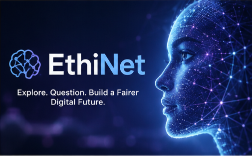

EXPLORING THE ETHINET
Discover how technology and artificial intelligence can shape our decisions — and why responsible technology matters.
Explore EthiNet
LEARN
Technology and AI are becoming part of almost everything we do. But how do we make sure they are fair, safe, and responsible?
EthiNet helps you discover how data can influence technology and why ethical thinking matters when we create it.
DISCOVER
EthiNet is an interactive space where you can explore how technology works, understand the challenges it can create, and learn how technology can be designed in a more responsible way.
Understand how technology can be affected by the data it uses.
Discover examples of technology being used in the real world.
Learn how we can make technology fairer, safer, and more responsible.
THINK ABOUT IT
Technology affects the way we learn, communicate, work, and make decisions.
That is why it is important to think about how technology affects people and how it can be improved.
EXPLORE
Learn how algorithms work and how unfair or incomplete data can affect their decisions.
Learn About AI Bias— Ishnoorpreet Kaur, 9J